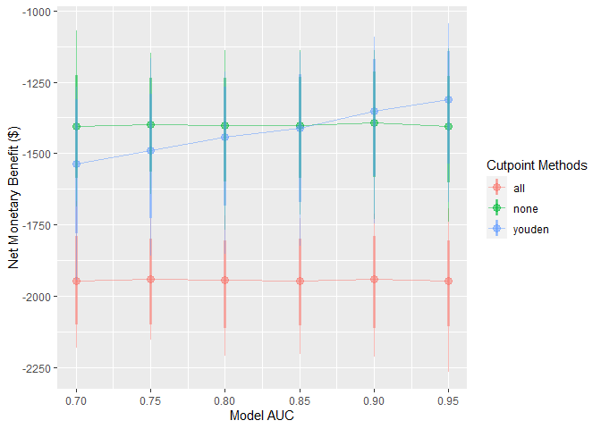
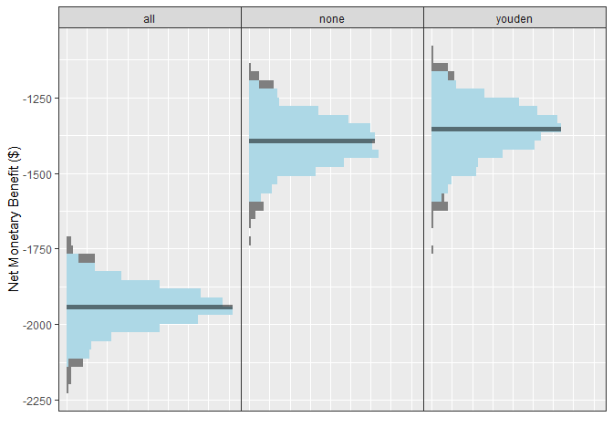
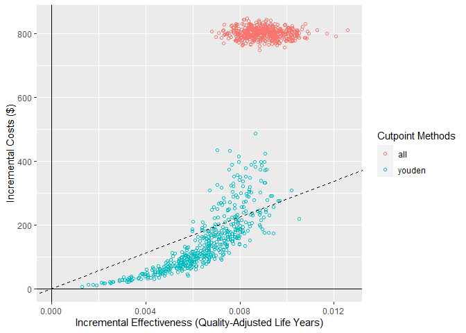

Overview
predictNMB is a tool to evaluate (hypothetical) clinical prediction models based on their estimated Net Monetary Benefit (NMB). It may be used by prediction model developers who intend to find out how performant their model needs to be clinically useful or by those in health services deciding whether or not to implement an existing model.
predictNMB has two main functions:
-
do_nmb_sim(): takes user-defined inputs for a given prediction model and population, then evaluates the NMB by performing simulations. -
screen_simulation_inputs(): callsdo_nmb_sim()many times, using a range of values for any of its inputs. This is useful for sensitivity analysis.
Installation
You can install the stable version from CRAN with:
install.packages("predictNMB")You can install the development version from GitHub with:
# install.packages("remotes")
remotes::install_github("ropensci/predictNMB")
# or, equivalently:
install.packages("predictNMB", repos = "https://ropensci.r-universe.dev")Estimating model performance
We must first define a hypothetical NMB associated with each square of a confusion matrix (2$$2 table). To do this, we create an R function which, when run, returns a named vector representing the four NMB values that we need. Since we are using Quality-adjusted life years lost (qalys_lost) due to the event and a willingness to pay (wtp) value of $28,000, this will function will also store some other details so that we can create a cost-effectiveness plot later.
get_nmb_sampler() is a predictNMB function that makes creating the function easier! If you create these functions without get_nmb_sampler(), you can’t make the cost-effectiveness plot but can still evaluate in terms of NMB.
Here, we make NMBsampler functions for cutpoint selection and evaluation separately. These incorporate uncertainty by passing in functions that sample values from their underlying distributions. The healthcare event leads to about 1 QALY lost, the cost of the treatment is about $800 and the treatment reduces the rate of the event by about 18%.
library(predictNMB)
fx_nmb_training <- get_nmb_sampler(
wtp = 28033,
qalys_lost = function() rnorm(n = 1, 1, 0.05), # about 1
high_risk_group_treatment_effect = function() rbeta(n = 1, 200, 900), # about 0.11
high_risk_group_treatment_cost = function() rgamma(n = 1, 2400, 3), # about $800
use_expected_values = TRUE
)
fx_nmb_evaluation <- get_nmb_sampler(
wtp = 28033,
qalys_lost = function() rnorm(n = 1, 1, 0.05),
high_risk_group_treatment_effect = function() rbeta(n = 1, 200, 900),
high_risk_group_treatment_cost = function() rgamma(n = 1, 2400, 3)
)We can then pass this to the simulation function. Required arguments:
-
n_sims: number of simulations to run. More simulations take longer but are more stable. -
event_rate: event incidence rate, or the proportion of patients experiencing the event. -
sim_auc: vector of hypothetical AUCs; e.g.seq(0.7, 0.95, 0.05)orc(0.75, 0.80, 0.85). -
n_valid: number of samples the validation set draws within each simulation (evaluating the NMB under each cutpoint). -
fx_nmb_training: function that returns a named vector used to get cutpoints on the training set. Recommended to use constant values. -
fx_nmb_evaluation: function that returns a named vector used to get cutpoints on the evaluation set. Recommended to use sampled values. -
cl: (Optional) users can pass a cluster made usingparallel::makeCluster(). If it is given, the simulations are run in parallel (faster).
library(parallel)
cl <- makeCluster(detectCores())
sim_screen_obj <- screen_simulation_inputs(
n_sims = 500, n_valid = 10000, sim_auc = seq(0.7, 0.95, 0.05), event_rate = 0.05,
fx_nmb_training = fx_nmb_training, fx_nmb_evaluation = fx_nmb_evaluation,
cutpoint_methods = c("all", "none", "youden"), cl = cl
)These simulations can be interpreted as a range of hypothetical situations under different levels of model performance within our specific healthcare setting. We can visualise how this change may affect preferences between the model-guided strategy versus a treat-all or treat-none strategy — in other words, using the model to determine who should get treatment, rather than everyone or no one.
autoplot() can be used on the object returned from this function to quickly inspect these trends:
autoplot(sim_screen_obj)
Here, we are visualising many simulations under different inputs. If we just want to inspect a single set of inputs, say when the model AUC is 0.9, we can run that simulation alone using do_nmb_sim(), or access it from our existing screen.
single_sim_obj <- do_nmb_sim(
n_sims = 1000, n_valid = 10000, sim_auc = 0.9, event_rate = 0.1,
fx_nmb_training = fx_nmb, fx_nmb_evaluation = fx_nmb,
cutpoint_methods = c("all", "none", "youden"), cl = cl
)
single_sim_obj <- sim_screen_obj$simulations[[5]]When plotting a single set of simulation inputs, we see the distributions of the NMB across all simulations under each strategy. Note that we have added some tasteful themes using theme_sim() that help reduce clutter on these types of plots.

For this scenario, when the model has an AUC of 0.9, we can see that the NMB is best when using the model-guided decisions. However, decision-makers may want to visualise these on a cost-effectiveness plot which shows the health benefit versus the costs. We can do this using the ce_plot() function, specifying the treat-none option as the reference strategy.
ce_plot(single_sim_obj, ref_col = "none")
From this plot, we can see that both the treat-all and model-guided decision lead to more QALYs than treating nobody (because more patients are receiving an effective treatment) but that the treat-all strategy is not cost-effective according to our cost-effectiveness plane (based on a willingness to pay of $28,033). Based on this, we would conclude that the hypothetical model-guided decision support system would be likely to be cost-effective should we be able to develop a model with this level of discrimination for this specific healthcare problem/context.
Citation
citation("predictNMB")
#> To cite predictNMB in publications use:
#>
#> Parsons et al., (2023). predictNMB: An R package to estimate if or
#> when a clinical prediction model is worthwhile. Journal of Open
#> Source Software, 8(84), 5328, https://doi.org/10.21105/joss.05328
#>
#> A BibTeX entry for LaTeX users is
#>
#> @Article{,
#> title = {predictNMB: An R package to estimate if or when a clinical prediction model is worthwhile},
#> author = {Rex Parsons and Robin D Blythe and Adrian G Barnett and Susanna M Cramb and Steven M McPhail},
#> journal = {Journal of Open Source Software},
#> publisher = {The Open Journal},
#> year = {2023},
#> volume = {8},
#> number = {84},
#> pages = {5328},
#> url = {https://doi.org/10.21105/joss.05328},
#> doi = {10.21105/joss.05328},
#> }Further reading
The predictNMB website and its vignettes:
Contributing
Please note that this package is released with a Contributor Code of Conduct. By contributing to this project, you agree to abide by its terms.
If you think you have encountered a bug, please submit an issue.
Please include a reprex (a minimal, reproducible example) to clearly communicate about your code.